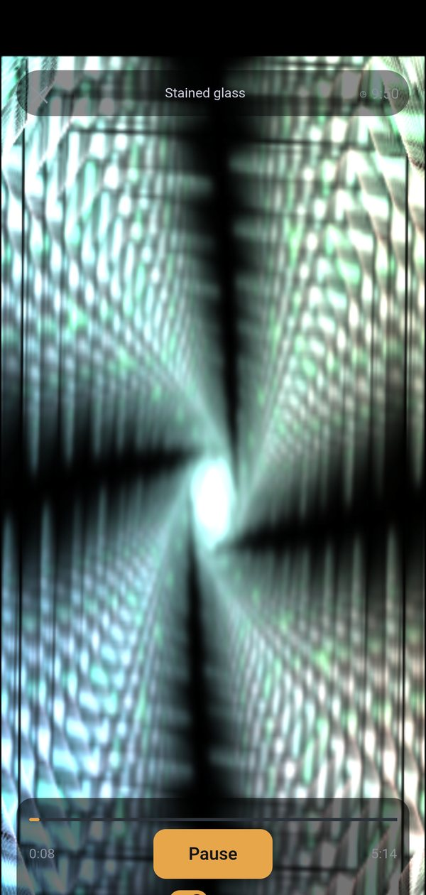
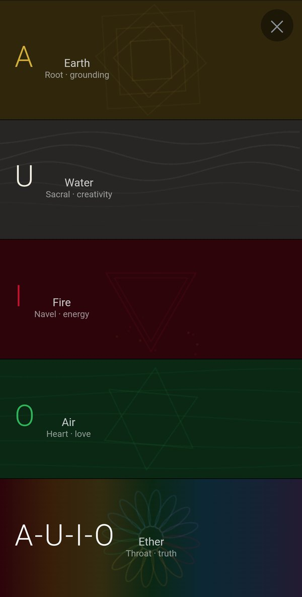
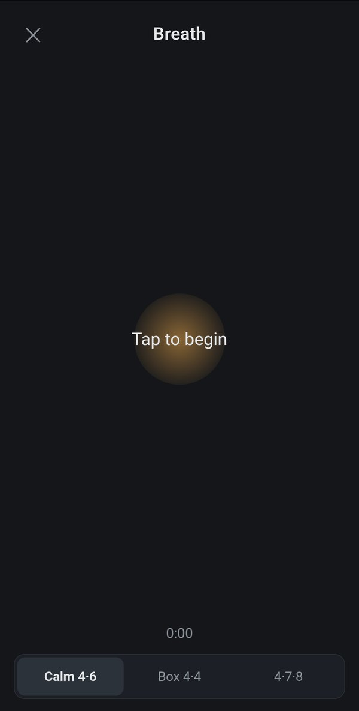

Three ways in

Guide
Press one button and the chakra toning plays, five minutes of held notes, while MilkDrop visuals breathe with the voice. Choose a style or let them change by themselves.

Elements
Five stripes, five sounds to sing along. Tap one and it fills the screen, its song loops in its own colour until you tap again.

Breath
A slow circle to breathe with before or after toning: calm 4·6, box breathing, or 4·7·8.
The five elements
AEarth
the root, grounding, gold
the root, grounding, gold
UWater
below the navel, creativity, milky white
below the navel, creativity, milky white
IFire
the navel, energy, crimson
the navel, energy, crimson
OAir
the heart, love, green
the heart, love, green
A-U-I-OEther
the throat, truth, every colour
the throat, truth, every colour
Made for a daily practice
- Session timer with a slow fade and a soft bowl bell.
- Keeps playing with the screen off, with lock-screen controls.
- A gentle log: days in a row and minutes this week, kept on your phone only.
- Works offline. No account, no ads, no tracking.